This year for spring break, my friend/roommate Ellie and I wanted to do something that was fun, cheap, and didn't involve drinking on a beach for a week straight. We decided to go to Washington, DC. Here are just some of the highlights (4 months later).
Couchsurfing
Since Ellie and I are both college students, we couldn't afford to stay in a hotel for 5 nights. We also thought it would be fun to meet some of the locals. For these reasons, we decided to try Couchsurfing. Basically, strangers let you sleep on their couch while you're traveling. It's a great way to meet new people in the area you're traveling in. Our host was great and took us out with her friends a few times. One night we tried Korean BBQ and a different night we ate Chinese food. She was really interesting to talk to, and also another programmer!
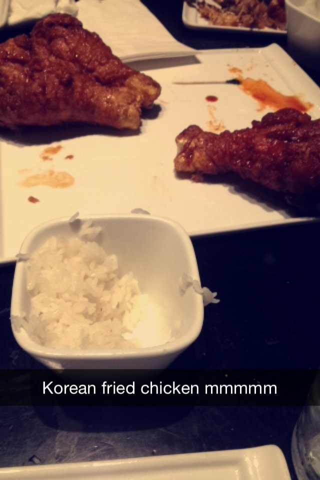Korean BBQ fried chicken! (Excuse the low-quality iPhone 4s snapchat screenshot...)
Udvar-Hazy Center
We flew into Dulles, so the first thing we did upon arriving in DC was visit the Udvar-Hazy center. Its two hangers contain plains, spacecraft, and other machinery related to aviation and space. We saw a real space shuttle and other objects that had been into space. There was also a Blackbird, the Enola Gay, and Nazi planes, and just to name a few. The space shuttle was probably the most impressive, due to its massive size and the fact that it had been to space and back multiple times.
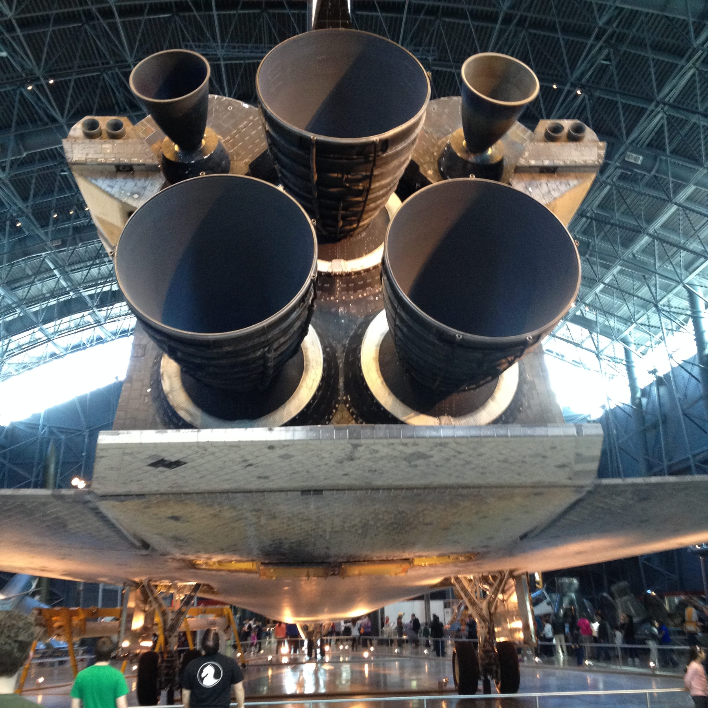Space shuttle butt.
White House Tour
When I was 15, a photography project of my pet rooster Fred that I took to the state fair got the highest award possible and hung in Senator Jerry Moran's office for a year. A month or two before our DC trip, I emailed him (or rather, his secretary), asking about a White House tour. We heard it was much too late to grab a time slot. Two days before we left for DC, I got a phone call saying that two people had cancelled so some spots opened up for us! I'd like to think I had an "in" with Jerry Moran, because of my rooster picture, but who knows.
The tour was pretty awesome. Before we even stepped foot in the white house, we were waiting in line outside and we saw Obama's dogs being walked by some security guards! Of course I took papparazzi-style photographs of them.
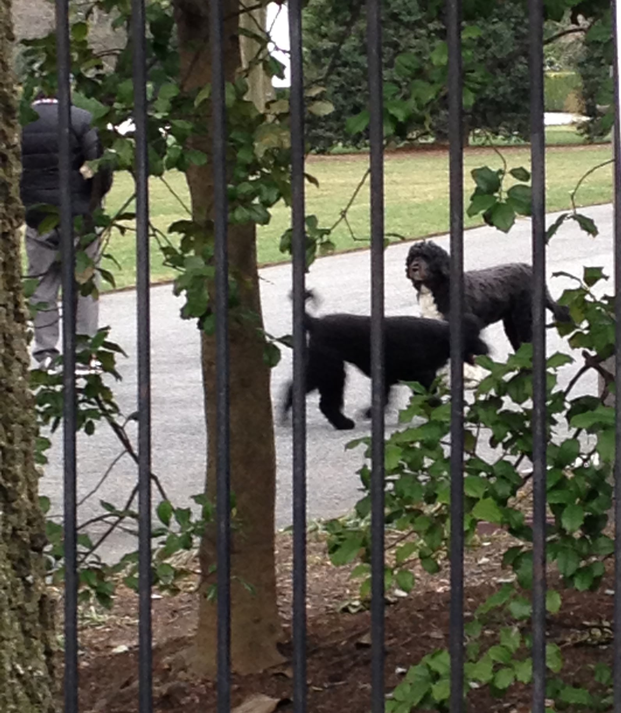The one and only Bo and Sunny. The most powerful dogs in the world. Escorted for their morning pee by some security guards.
The actual White House tour was self-guided. They don't let you walk around the entire White House, just some historical rooms off to the sides. They also had the portraits of presidents and First Ladies hanging on the walls. The tour ended directly in front of the White House, which was unexpected.
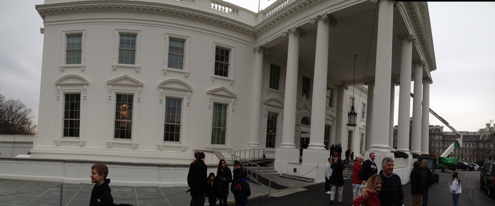Then we also went on a tour of the Capitol building. It was really interesting, and we even brushed arms with John McCain as he was walking through the hallway! Bill Gates was in the building the same day we were but we didn't see him. We had tickets to sit in on the Senate in session for a bit.
Museums
We spent a lot of time in museums. My favorite one by far was the Holocaust museum. I've always been interested in learning about the Holocaust (I even used my history credit in college to take History of the Holocaust), and I'd met a few Holocaust survivors, but I wasn't prepared for everything I saw in the museum. We walked through an actual train car that transported people to the camps, and we saw a room full of shoes confiscated from the prisoners. Ellie and I spent almost 5 hours there.
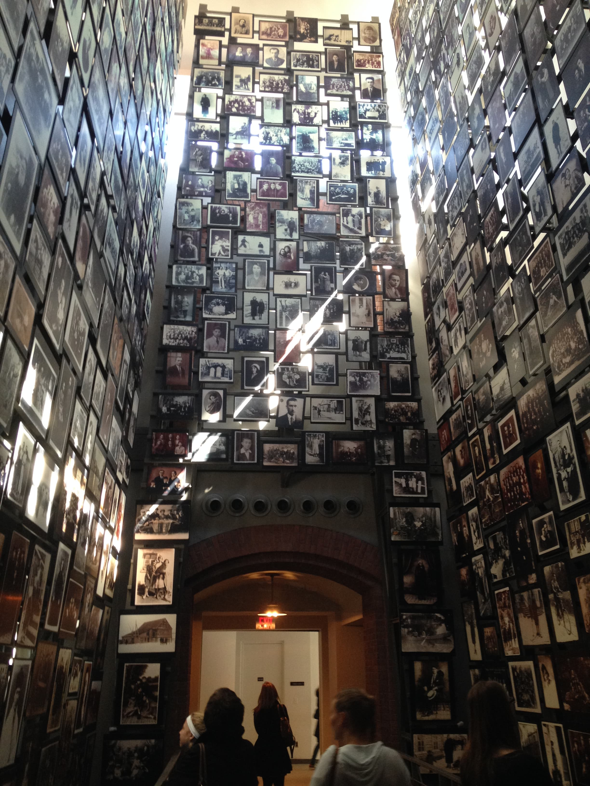Photos of Holocaust victims from the museum.
The Newseum was probably my second-favorite. It was a museum about the news, but it had really cool, artifacts like sections of the Berlin Wall and several items from 9/11. We saw the twisted broadcasting tower from the top of one of the buildings, pieces of the planes, and wallets and cell phones from the victims. Other cool things included the unabomber's cabin and hundreds of newspapers from important events in history.
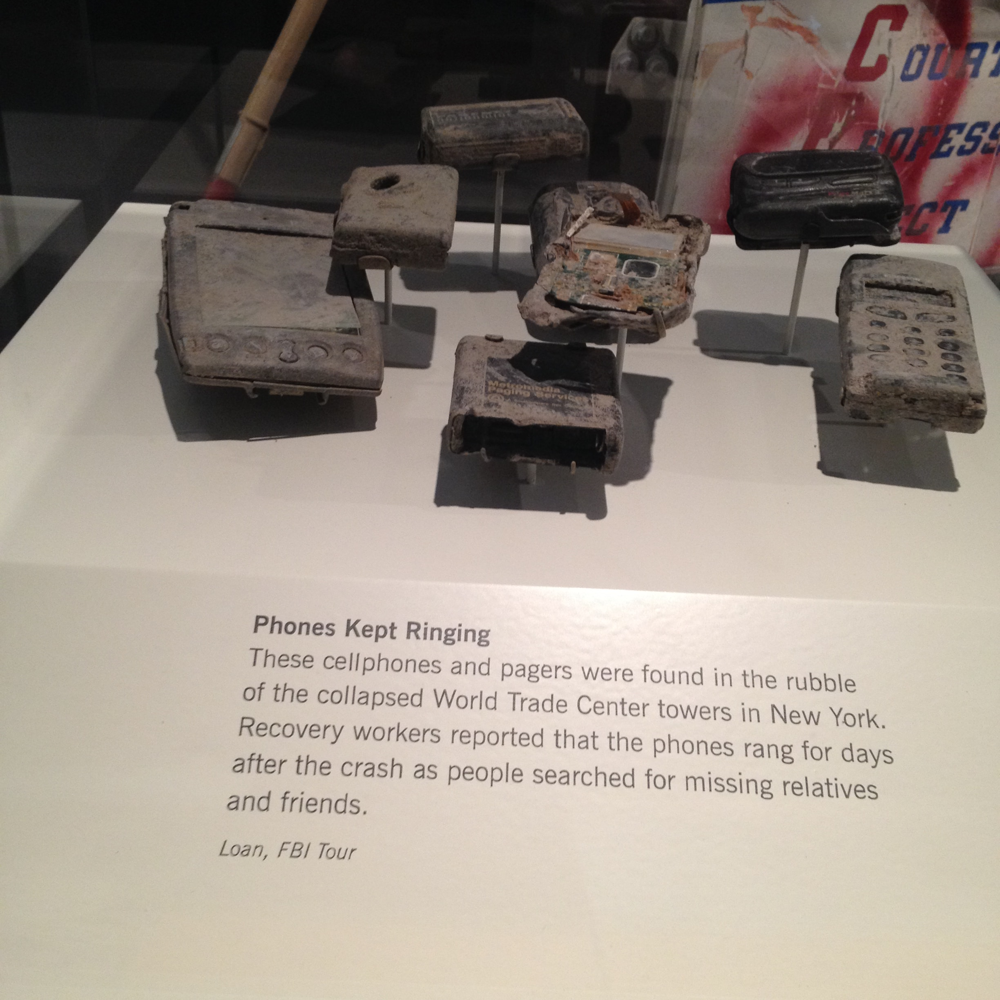I saw too many cool things in museums to even write about. I saw the Wright Brothers' first plane, a bunch of rare gems and preserved mammals in the Smithsonian, and even a really interesting Spinosaurus exhibit at the National Geographic museum.
Transportation
We didn't have our own means of transportation in DC, but we got around pretty easily. Our host's apartment was right by a metro station. I'd never ridden on a subway before, so I was pretty excited, while everyone else in 8am rush hour traffic on their way to work looked like they wanted to be anywhere but there. The first time I saw the train roll into the station I was so excited but it was also a little bit frightening. I didn't expect it to be so loud and fast! It was really convenient not having to drive in the crazy DC traffic. Plus, I learned that the metro is great for people-watching.
A few times Ellie and I needed to take an Uber, which was also a new experience for me. The rides were much cheaper than a taxi and the drivers were friendly.
I wasn't prepared for all the walking we did in DC. Most days we were walking around the sidewalks or museums for 8+ hours a day. By the end of the week, my back felt like it belonged to a 90 year old. It made me realize I should probably try to get a standing desk instead of sitting for most of the day...
Motorcades
Ellie and I were killing time in a coffee shop near the White House one afternoon when we noticed two men dressed in black standing on top of a tall nearby historical building. We were wondering if they were secret service agents or something. They'd been there for over an hour when police started blocking the intersection near the coffee shop. We were about to see a motorcade! Ellie and I waited outside and watched all of the official-looking black vehicles zoom past. People were shouting pretty angrily at one of them. Then we walked over to the White House, and asked a security man what the motorcade was about. He told us that the Afghani president was staying in a nearby building and that was his motorcade. Neat!
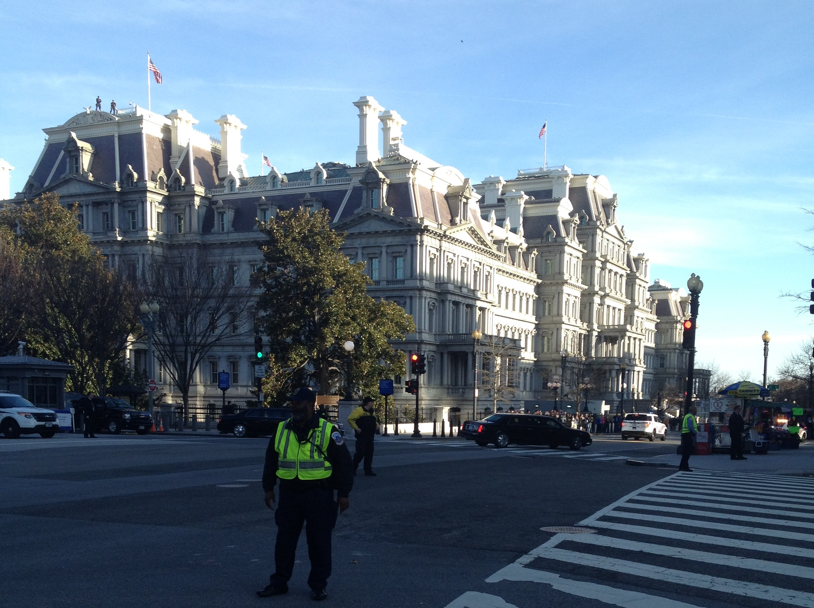Here you can see the limo with the Afghani president, and also the secret service men on top of the building.
A few days later, we were burning some time in that same coffee shop when we saw two men on top of that building again. We went outside and saw another motorcade. We asked a nearby security guard whose motorcade it was, and he told us, "Well, if you look at the flags on the vehicles, that's what country the person is from." I mentioned the Afghani president's motorcade from a few days previous and he nodded his head. Later on my phone, I looked at the pictures I took and saw that the limo had American flags instead. I'm not sure who the motorcade was for, but it didn't look big enough to be the president's.
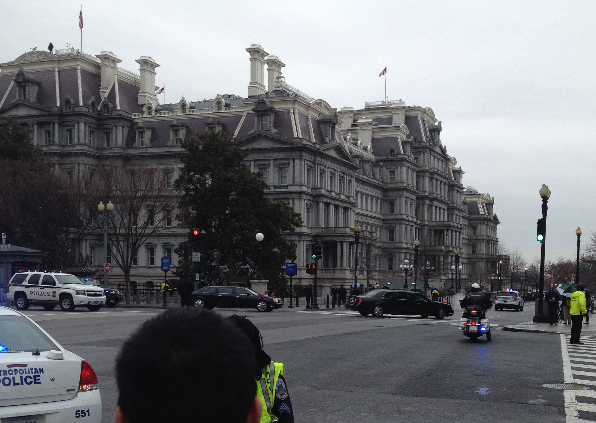If you zoom in enough, you can see tiny American flags on the vehicles.
Fish Market
If you couldn't tell by the header image I chose for this blog post, I really loved the fish market. Living in Nebraska, I don't get to taste fresh fish very often. They had so much fresh fish and even live crabs! There were so many stalls and it was hard to choose what to order. I ordered clam chowder, fresh steamed shrimp, and a swordfish sandwich (the first time I ever had swordfish). It was all pretty reasonably priced and I probably would've taken some fish home to cook if we weren't couchsurfing. We ate on a little floating dock that had tons of birds on it.
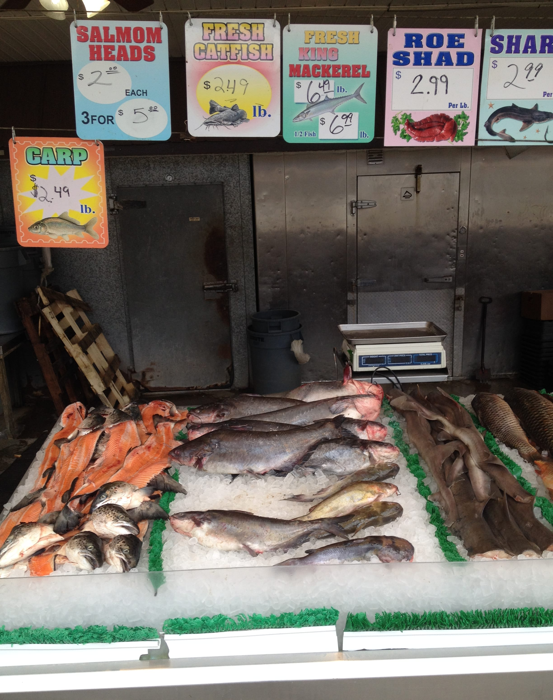Monument Night Tour
Ellie and I decided to go on a self-guided night monument tour. Not many people were out and it was pretty fun. The monuments were lit up and they looked completely different than they do during the day. We downloaded an app that had different paths to walk depending on which monuments you wanted to see. Unfortunately, we had already been walking all day and we were too tired to see every monument. My favorite one of course was the Lincoln Memorial, since I live in Lincoln, Nebraska :) 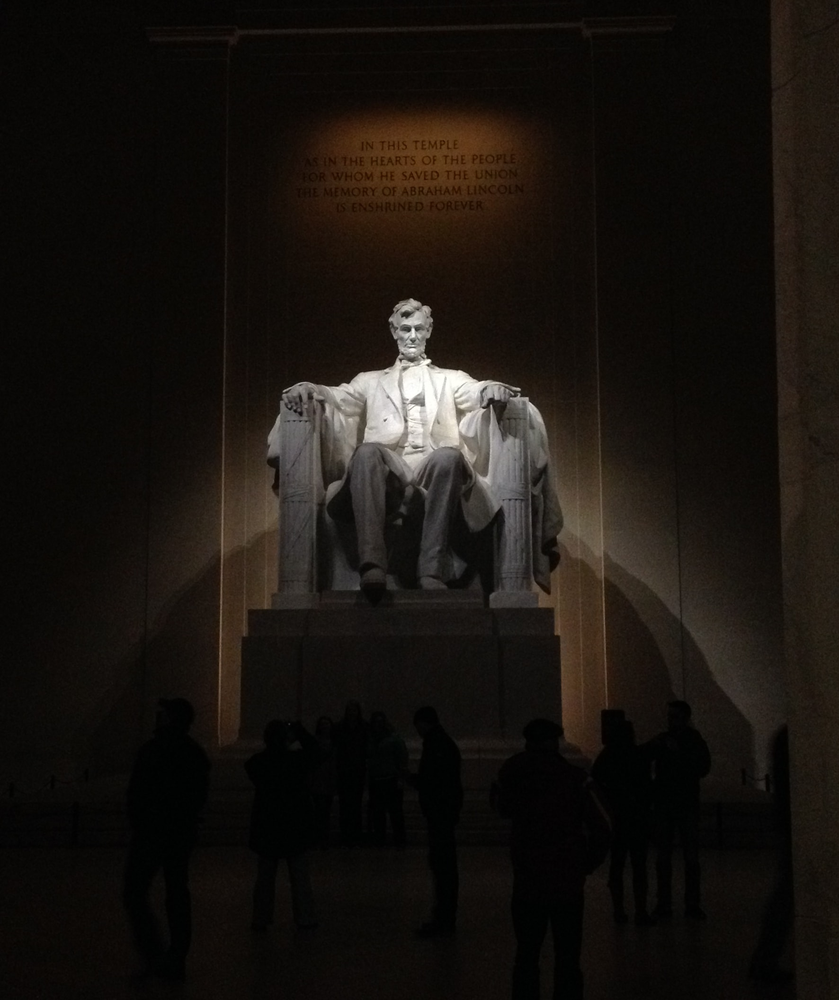
Baltimore
On our last day, we went to the NSA museum between DC and Baltimore. It was pretty cool to me, as a computer science major. My favorite part was that they had functioning Enigma machines you could actually play with to see how they worked. We also met four women computer science professors there and talked to them for a bit. They had many exhibits on codebreaking and ancient, as in decades old, computers.
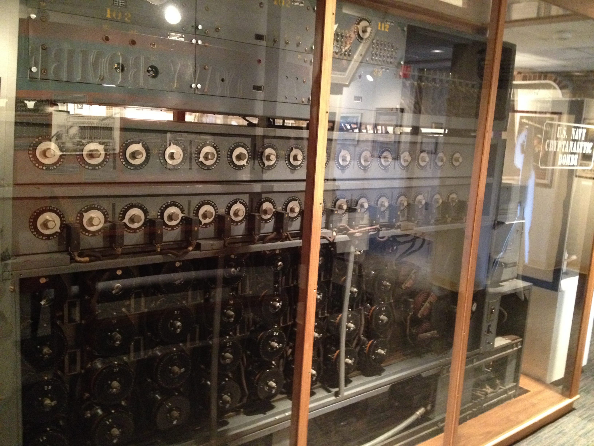This type of machine designed by Alan Turing broke the Enigma code in WWII.
Then we took an Uber to Baltimore. We ate at a nice restraunt on the harbor and then walked around. We had pretty good timing for our trip because a few weeks later the riots in Baltimore happened.
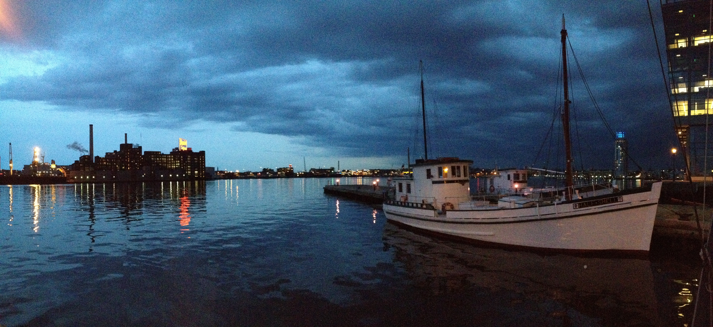Questions? Comments? Don't hesitate to contact me!